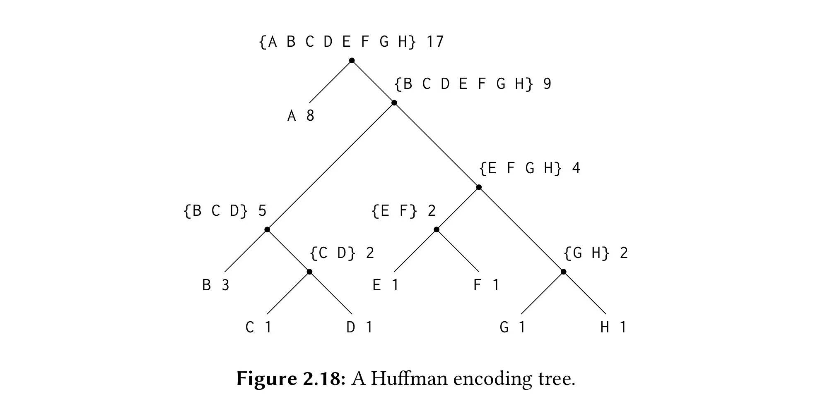

在看 SICP Section 2.3.4，对这节中 Huffman 树的实现中使用的组合 / 抽象有相当程度的参考.
其实我应该把代码放在某个仓库里，比如把一些数据结构的 Haskell 实现整合在一个仓库里，但是我还没有这么多可供整合的材料，所以以后再说吧.
Huffman 树的 Haskell 实现
数据抽象
type Weight = Int
data Symbol = A | B | C | D | E | F | G | H deriving Show
data HuffmanTree a = Empty |
Leaf a Weight |
Node (HuffmanTree a) (HuffmanTree a) [a] Weight
deriving Show
Symbol + Weight → Leaf
设定对符号 (Symbol / 泛型 a) 根据使用频率/权重 (Weight) 进行 Huffman 编码，将这两个信息整合抽象成 Leaf，对应 SICP 中的 ((define (make-leaf symbol weight) (list 'leaf symbol weight))).
泛型与类型约束：对符号没有类型约束，对权重的约束是 Weight 属于 Ord typeclass，因为需要权重是可以比较的，这里没有写泛型，直接用 Int 作为权重的类型 .
HuffmanTree 的递归定义
含 Empty, Leaf, Node 三种构造子:
-
Empty: 空树 -
Leaf: 包含符号a和权重Weight的叶子结点 -
Node: 包含左右子树(HuffmanTree a)、子树符号并集[a]和子树总权重Weight的分支结点.
Huffman 树的构建
权重获取
通过模式匹配获取 Leaf，Node的权重.
这里没有考虑空树 Empty 的情况，如果考虑应该写 getWeight :: HuffmanTree a -> Maybe Weight，匹配到 Empty 时返回 Nothing. 对一种类型做模式匹配时应该匹配到每一个构造子，这是标准的实践.
getWeight :: HuffmanTree a -> Weight
getWeight (Leaf _ w) = w
getWeight (Node _ _ _ w) = w
列表整理
Huffman 树建立的起点是一个有序的叶子列表，建立过程中也需要保持 [HuffmanTree a] 列表的有序. 这一部分的函数的目标是将一个无序的列表整理成一个有序的列表.
» adjoinLeaf: 根据权重将 HuffmanTree a 插入到已有的有序 [HuffmanTree a] 中. （升序排列）
» initLeafs: 将已有的无序叶子列表整理成有序的叶子列表.
» moveFirstNode: Huffman Tree 建立过程中的 Merge 操作将把权重最小的两个 HuffmanTree (Leaf / Node) ——也就是列表前两个元素——组成一个新的 Node，所以 Merge 后需要将新生成的 Node 重新放置，利用此函数实现这个重置.
adjoinTree :: HuffmanTree a -> [HuffmanTree a] -> [HuffmanTree a]
adjoinTree t [] = [t]
adjoinTree t (t':ts)
| w < w' = t: t': ts
| otherwise = t': (adjoinTree t ts)
where w = getWeight t
w' = getWeight t'
initLeafs :: [HuffmanTree a] -> [HuffmanTree a] -- I know pl(leaf) = leaves, btw. ^^
initLeafs [] = []
initLeafs (p:ps) =adjoinLeaf p (initLeafs ps)
moveFirstNode :: [HuffmanTree a] -> [HuffmanTree a]
moveFirstNode (t:ts) =adjoinLeaf t ts
树的建立
» makeNode: 将两个 HuffmanTree 组合成一个 Node.
» constructHuffTree: 树的自底向上建立，尾递归建立 Huffman Tree.
-
递归步：将当前列表中的前两个元素通过
makeNode合并成一个父结点Node，移动父结点得到新的有序列表，对新列表执行递归; -
递归基：列表中只有一个元素，即根结点.
» initAndConstructHuffTree: 最后的封装，对叶子列表的初始化 initLeafs 和树的建立 constructHuffTree 进行 Point-less 的组合.
makeNode :: HuffmanTree a -> HuffmanTree a -> HuffmanTree a
makeNode (Leaf s1 w1) (Leaf s2 w2) = Node (Leaf s1 w1) (Leaf s2 w2) [s1, s2] (w1 + w2)
makeNode (Leaf s w) (Node l r ss w') = Node (Leaf s w) (Node l r ss w') (s:ss) (w + w')
makeNode (Node l r ss w') (Leaf s w) = Node (Node l r ss w') (Leaf s w) (ss ++ [s]) (w + w')
makeNode (Node l1 r1 ss1 w1) (Node l2 r2 ss2 w2) = Node (Node l1 r1 ss1 w1) (Node l2 r2 ss2 w2) (ss1 ++ ss2) (w1 + w2)
constructHuffTree :: [HuffmanTree a] -> HuffmanTree a
constructHuffTree [] = Empty
constructHuffTree [t] = t
constructHuffTree (x:y:ts) = constructHuffTree $ moveFirstNode $ (makeNode x y): ts
initAndConstructHuffTree :: [HuffmanTree a] -> HuffmanTree a
initAndConstructHuffTree = constructHuffTree . initLeafs
Huffman 树的编解码
获取符号编码
Huffman 树的建立过程就是编码过程，这里只是将编码用另一种形式呈现出来.
此处的编码表示：
data Bit = L | R deriving Show
type Bits = [Bit]
L 对应二进制 0，R 对应二进制 1.
编码的获取过程就是对 Huffman 树进行遍历与记录的过程：
getCode' :: HuffmanTree a -> Bits -> [(a, Bits)]
getCode' (Node (Leaf s1 _) (Leaf s2 _) _ _) rec = [(s1, rec ++ [L]), (s2, rec ++ [R])]
getCode' (Node (Leaf s' _) node _ _) rec = [(s', rec ++ [L])] ++ getCode' node (rec++[R])
getCode' (Node node (Leaf s' _) _ _) rec = getCode' node (rec++[L]) ++ [(s', rec ++ [R])]
getCode' (Node nodel noder _ _) rec = getCode' nodel (rec++[L]) ++ getCode' noder (rec++[R])
getCode :: HuffmanTree a -> [(a, Bits)]
getCode t = getCode' t []
» getCode'：实现对 Huffman 树的递归遍历
-
递归步：对于一个结点，对左右子树进行匹配，对非叶结点（
node）继续递归遍历，在rec中记录途径的分叉方向. -
递归基：当对左/右子树匹配到
Leaf时，表明已经抵达了一个Symbol，此时的rec ++ [L]/rec ++ [R]就是Symbol对应的编码. -
模式匹配的解释：回顾 Huffman 树的构造过程，我们总是把两个结点合并成其父结点，所以不存在某个子树为
Empty的情况，也即——每个分支结点的模式都是Node lhs rhs _ _；同时，我们将Leaf作为递归基，不再对Leaf做递归，这就是为什么这里只对不同形态的Node构造子做模式匹配，并把含Leaf递归基的情形放在前面的原因.
» getCode：对 getCode' 做一个封装，给 rec 一个起始值 []，即 在 Huffman 树的根节点，没有任何途径记录.
解码
基本思路：根据 Bit 在树上移动，L - 向左子树移动，R - 向右子树移动，抵达子树为 Leaf 时，完成一个字符的解码，此时回到根节点继续对下一个字符解码，直到 Bit 列表为空.
-- decode one symbol
decodeOne :: HuffmanTree a -> Bits -> (a, Bits)
decodeOne (Node (Leaf s _) _ _ _) (L:bs) = (s, bs)
decodeOne (Node _ (Leaf s _) _ _) (R:bs) = (s, bs)
decodeOne (Node node _ _ _) (L:bs) = decodeOne node bs
decodeOne (Node _ node _ _) (R:bs) = decodeOne node bs
-- decode from scratch
decode :: HuffmanTree a -> Bits -> [a]
decode _ [] = []
decode t bs =
let (s, remainBits) = decodeOne t bs
in s: decode t remainBits
» decodeOne:
-
递归基：当前
Bit对应的子树为Leaf，即完成了一个字符的解码，将该字符和剩余的Bit返回 -
递归步：当前
Bit对应的子树为Node，继续在该Node上递归解码，直到遇到递归基的情况
» decode:
-
递归基：
Bit列表为空，代表解码完毕. -
递归步：
Bit列表非空，将根结点和当前Bit列表交给decodeOne进行单字符的解码，单字符解码完毕后，继续对剩余的Bit在根节点上做单字符解码，直到Bit列表空.
» 如何回到根节点：
一开始写的函数类型签名是这样的 decode :: HuffmanTree a -> HuffmanTree a -> Bits -> [a]，两个 HuffmanTree 分别是原始根节点和当前所在的根节点，实现大致如下：
decode' :: HuffmanTree a -> HuffmanTree a -> Bits -> [a]
decode' originT (Node (Leaf s _) _ _ _) (L:bs) = s: (decode' originT originT bs)
--snip--
看着不是很舒服，因为 originT 这个参数在递归过程中没有变过，所以稍稍改变了递归结构，写了上面的 decode 和 decodeOne. SICP 中使用闭包来记忆初始根节点.
组合数据 (compound data) 的结构与解构 (construct / extract)
SICP (Scheme): Blur the Barrier of Data and Procedure / abstraction barrier
一致性
我们希望将有结构的数据——而不是散落的变量——作为程序的组件，所以有了组合数据 (compound data)，比如 struct / class，于是出现的问题是，如何把用于构造 compound data 的字段重新提取出来，提取的行为需要保证的一件事情是：字段被提取前后行为是一致的，主要是编译器的工作，如果一定要在源代码的层面上去体现这一点，如何做到？在此处贴 SICP 2.1.3 (Page 124) 的示例代码：
(define (cons x y)
(define (dispatch m)
(cond ((= m 0) x)
((= m 1) y)
(else (error "Argument not 0 or 1: CONS" m))))
dispatch)
(define (car z) (z 0))
(define (cdr z) (z 1))
Exercise 2.4 (Page 125) 中的通过 lambda 实现也很漂亮：
(define (cons x y)
(lambda (m) (m x y)))
(define (car z)
(z (lambda (p q) p)))
（用 Pure Lambda Calculus 实现此例，参见本节的最后一小节.）
SICP 这一章重点呈现的一个点是: 数据（data）与程序（procedure）的分界线并不是那么泾渭分明的. 以上的两个程序很准确地体现了这一点：列表的构造子返回的是一个 procedure，该 procedure 提供了访问组成列表的元素的接口，所以可以基于此定义 car/ cdr.
数据的组合与提取 → 程序的构造：抽象层
组合这件事情在 LISP (LISt Programming) 中是简洁的，数据的组合方式就是构造列表，如 (list 1 2 3) / (list 3 4 (list 9 7) 5).
而处于程序之中的数据不可能直接以这样的形式在函数之间流转，所以有了抽象层:

constructor (make-rat) 和 selector (denom, numer) 是从基本类型 (primitive data type) 到组合数据 (compound data) 的一次抽象，给了程序（在此抽象层之上的函数，add-rat / sub-rat）一个更高的视角去看待数据，数据不再只是零散的整型/浮点型，而是可以被构造 / 提取 / 分析的 rat；在 add-rat / sub-rat 之上的函数无需关心 rat 的实现细节，只需使用 add-rat 等运算来解决问题即可. 程序的构造过程是抽象层次提升的过程.
Haskell: Pattern Match
写过 Lisp 会更懂 Haskell 的好，就像写过 C 可以更好地体会 Python 开发的便捷，这里只是考量语法的易用性，没有对于性能/应用场景等其他方面的比较.
在 Scheme 中写 (define (make-leaf symbol weight))/ (define (leaf? object )) / (define (weight tree)) 这样的函数写得太多的时刻，会想 Haskell 中是如何应对数据的构造和提取这个问题的呢？
构造：
声明一种组合数据的语法如下：
data Point = Point Int Int
定义了 Point 类型，对应一个构造子 Point Int Int，即后续可以通过此构造子构造 Point 类型的组合数据，比如 p = Point 1 2.
提取：
模式匹配 Pattern Match
一个简单的例子:
getX :: Point -> Int
getX (Point x _) = x
值得注意的一点是：如何构造（Point Int Int）这个组合数据就如何去匹配它 （Point x _），形式是一样的.
如何结构，就如何解构.
很多语言都有 Pattern Match 的语法，但是 Haskell 设计得真的太丝滑，我写这篇博客的目的就在于呈现上面加黑的那句话.
这个语法提供的一个优势是，可以对函数参数通过 Pattern Match 做解析，比如上面的例子：
constructHuffTree :: [HuffmanTree a] -> HuffmanTree a
constructHuffTree [] = ... -- 空叶子列表 → 返回空树
constructHuffTree [t] = ... -- 只有一个叶子 → 返回只有根节点的树
constructHuffTree (x:y:ts) = ... -- 有两个及以上叶子 → 递归建立 Huffman 树
呈现出来的表现是：函数参数被解构的方式，决定了函数的行为.
比如对于这样的问题：求解二叉树的节点的数量
data Tree a = Empty | Node a (Tree a) (Tree a)
treeSize :: Tree a -> Int
treeSize Empty = 0
treeSize (Node _ left right) = 1 + treeSize left + treeSize right
-
使用
Empty构造子构造出的空树 → 直接返回 0 (递归基) -
使用
Node构造子构造出的非空树 → 递归求解 (递归步)
数据的构造方式决定了我们对数据的处理方式，而在 Haskell 中，构造数据的形式和对数据进行模式匹配的形式是一致的，所以可以在函数参数位做模式匹配，一种模式对应一种函数行为.
Lambda Calculus - pair abstraction
Pure Lambda Calculus 中的 pair abstraction
上面一致性这一节提到的例子，可以使用纯 Lambda Calculus 来实现1：
pair = λm λn λb. b m n
pair v w = λb. b v w
这样的 abstraction 提供的视角是：通过对 pair 的两次应用（application），对 m, n 进行实例化，即 确定 pair 中所含的元素，剩下的 b 为后续在 pair 元素上进行的操作留接口. 若想对 pair 中的元素进行按序提取，可定义 fst 和 snd：
fst = λa λb. a
snd = λa λb. b
(pair v w) fst → v // 根据 left associativity convention，这里的括号是可以省略的
(pair v w) snd → w
如果你更希望以 fst (pair v w) 这样的编程风格呈现，当然也可以做到：
tru = λt λf. t // α 等价于上一个代码段定义的 `fst`，我们可以对同一个抽象做不同的理解
fls = λt λf. f // ... `snd` ...
fst = λp. p tru
snd = λp. p fls
fst (pair v w) → v
snd (pair v w) → w
再次审视这个 abstraction：pair = λm λn λb. b m n. Lambda Calculus 中将我们惯常称之为函数的结构称为 abstraction（抽象），这里的 pair abstraction 就对 pair 的构造与操作进行了抽象，我们首先通过外层参 m, n 确定包含的元素，构建 pair，最后通过内层参 b 来执行对已有元素的操作；在这样的视角下，pair 天然具备与 Lambda Calculus 体系内其他函数（abstraction）交互的属性，因为在实例化 pair 元素之后，它向外界提供 b 这个交互接口，等待其他 abstraction 与 pair 已有的元素通过应用（application）交互.
Böhm’s theorem
对于 (pair v w) fst 这样的结构，假定 a,b,c,d 是不同的四个符号，可以想见 (pair a b) fst 和 (pair c d) fst 的值必然是不同的，提高此观察的抽象程度，我们可以陈述：对于不同的抽象，应用相同的操作，得到的值不同. Lambda Calculus 和 Combinator Logic 里的 Böhm’s theorem 2 如下：
In λ and CL: let $M$ and $N$ be combinators, either in βη-normal form (in λ) or in strong normal form (in CL). If $M \not\equiv N$, then there exist $n ≥ 0$ and combinators $L_1$, …, $L_n$ such that $$ ML_1 …L_nxy \quad \rhd_{\beta,w} \quad x, $$ $$ NL_1 …L_nxy \quad \rhd_{\beta,w} \quad y. $$ Roughly speaking, Böhm’s theorem says that $M$ and $N$ can be distinguished, not just by their structure, but by their behaviour.
Böhm’s theorem 提供的视角是：在不等的两个组合子（即不含自由变量的 λ-term）上应用相同的操作，得到的值不同；即 我们可以通过组合子的行为来对不同组合子进行区分. 上文提到的 (pair v w) fst 就是一个简单的例子，(pair a b) 和 (pair c d)是不同的组合子，将此二者施以同样的操作 fst ，得到的值不同. 我们在 Scheme 中实现的 cons - dispatch 也可以用这个思路来理解.